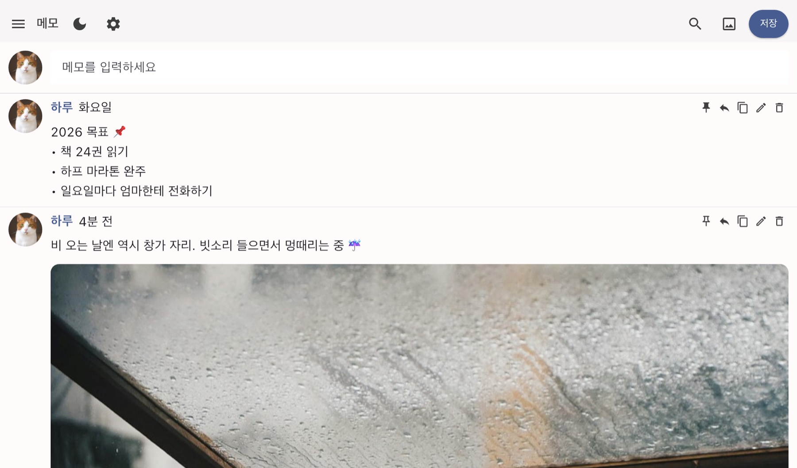
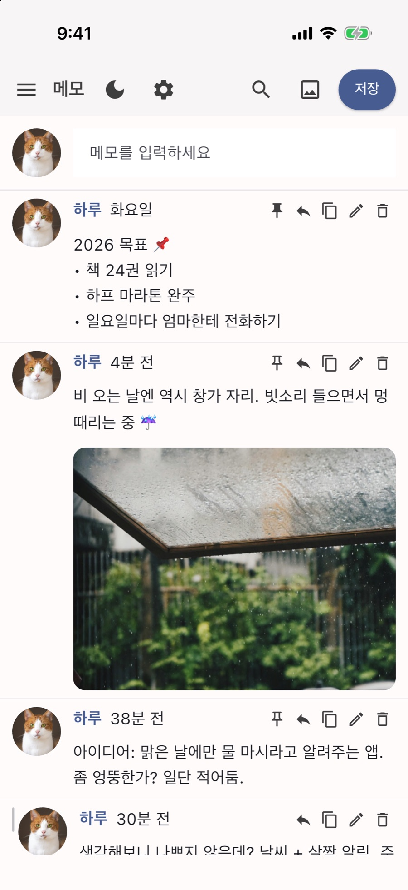
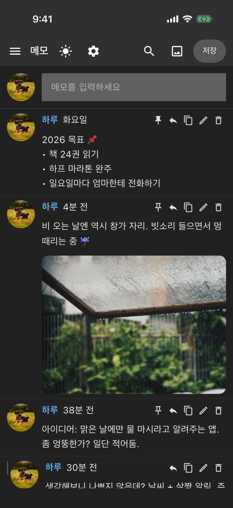
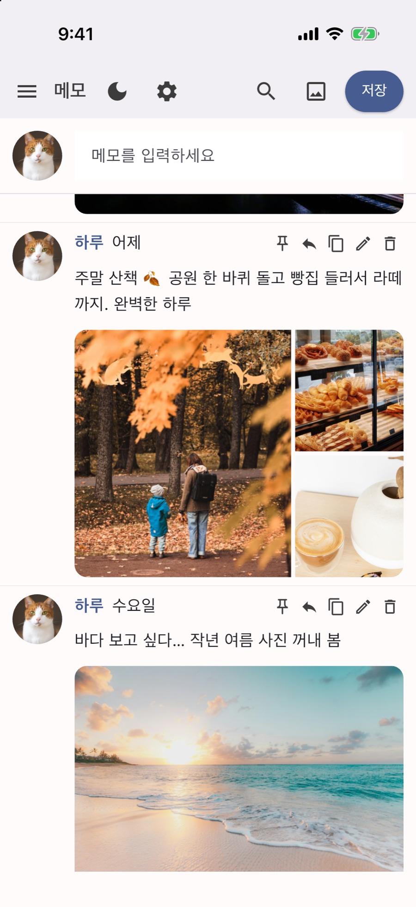
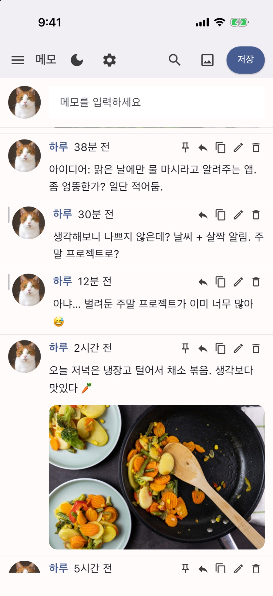

모니터 옆에 좁게 세워 두고
창 폭을 좁게 줄여서 작업 화면 옆에 살짝 붙여 두세요. 올해 다짐이나 좋아하는 문장을 맨 위에 고정해 두면, 일하다가 눈길만 돌려도 마음이 다잡아져요.
팁: 프로필 사진을 숨기면 좁은 창에서도 글자 칸이 시원하게 넓어져요!



SNS에 툭 던지듯 가볍게 적어 보세요. 스쳐 가는 생각도, 일상 사진도, 내 글에 달아 둔 답글까지 전부 내 기기 안에만 머물거든요. 계정도, 서버도, 눈치 볼 사람도 없습니다.
새 문서를 펼치면 하얀 여백부터 부담스럽죠. 한두 줄짜리 혼잣말을 파일 하나로 만들자니 애매해서 결국 창을 닫게 됩니다.
자물쇠를 걸어 둬도 결국 누군가의 서버에 남는 글이니까요. 진짜 속마음은 끝내 삼키게 되더라고요.
입력칸에 적고 저장만 누르면 끝! 최신 글이 위로 차곡차곡 쌓이고, 내 기기 밖으로는 한 글자도 나가지 않아요.


창 폭을 좁게 줄여서 작업 화면 옆에 살짝 붙여 두세요. 올해 다짐이나 좋아하는 문장을 맨 위에 고정해 두면, 일하다가 눈길만 돌려도 마음이 다잡아져요.
팁: 프로필 사진을 숨기면 좁은 창에서도 글자 칸이 시원하게 넓어져요!
산책길 풍경, 동네 빵집, 라떼 한 잔까지. 글마다 사진을 10장까지 넉넉히 붙여 나만의 일상 피드를 채워 보세요. ‘좋아요’ 받을 일이 없으니 대충 찍은 사진도 정겨워요.
문득 떠오른 아이디어에 답글을 달며 생각을 이어 가 보세요. 원래 글을 고쳐 쓰지 않아도 내 생각이 어떻게 자라났는지 흐름이 고스란히 남거든요.
오직 나만 보는 곳이니 단어를 고르거나 꾸밀 필요가 없어요. 불 끈 방 안에서는 편안한 다크 모드로 바꾸고, 마음에 담아 둔 말을 있는 그대로 꺼내 보세요.
앞으로 이런 것도 넣어 보면 재밌겠다 싶은 제 작은 메모장이에요. 아직 앱에 들어간 기능은 아니고, 꼭 만든다는 약속도 아니지만 살짝 공유해 봐요!
비공개 계정이라도 글이 남의 서버에 저장된다면 온전한 비밀이 아니니까요. Solche는 아예 서버 없이 작동하도록 설계했습니다.
지금 보고 계신 이 홈페이지도 방문자를 전혀 추적하지 않습니다. 쿠키도, 분석 도구도, 외부 글꼴조차 쓰지 않았거든요.
무료 · 광고 없음 · 회원가입 없음